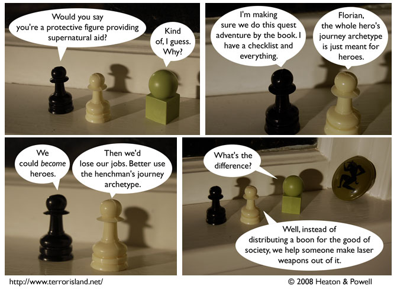

Strip #315
— Monday, June 16, 2008
No offense meant to legitimate laser researchers
Notes, Thoughts, &c.
Ben’s Notes
Terror Island is two years old today! Or maybe it was last week.
I don’t know, I can’t keep track of this stuff. What do you think I am, a time fan or something?
Lewis’s Notes
Later, when Florian and Gavriel become a crime-fighting duo, I am totally claiming that panel 3 was foreshadowing. However, if they don’t, then it was just a joke without narrative significance.